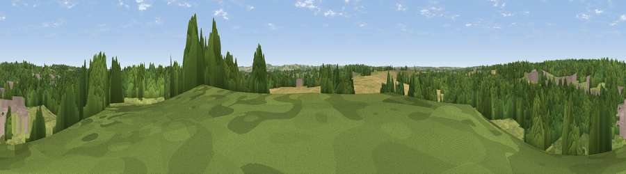

Viewpoint near Clophill
#43923 in England · top 78% of its area beats it · near Clophill · path 76 mWhere it is
The exact computed spot (TL 07875 37125). Click the marker for map links.
Public access: the nearest public right of way is about 76 m away — the final stretch may cross private land. Computed from Natural England's CRoW access layer and OpenStreetMap rights of way — not the legal definitive map. Always verify locally.
The view, rendered

A 360° render of this exact spot computed from the terrain model, tree cover and land cover — summer colours, afternoon light, calibrated against photographs of famous viewpoints. Real trees, hedges and buildings will differ in detail.
The panorama
Grey silhouette: terrain skyline in each direction (720 bearings, Earth curvature and refraction included). Dashed green: skyline with trees (+15 m) and buildings (+8 m) as obstacles. Blue strip: how far the ground is visible on each bearing.
Where the view opens
Wedge length = distance to the farthest visible ground on that bearing (vegetation-aware). Rings at 10, 25 and 50 km.
What fills the view
48% woodland · 25% grassland · 19% cropland · 8% built-up
Angular shares of the visible panorama (visual magnitude), not map area. Landscape diversity 0.53 (0–1 Shannon).
Key numbers
More beautiful places nearby
The staircase of upgrades: each row has a higher view potential than everything closer. Driving times are estimates from straight-line distance, calibrated against real road routing — check an actual route before setting out.
| Place | Direction | Drive | Score |
|---|---|---|---|
| Cain Hill | SE · 3 km | ~6 min | 19.7 |
| Viewpoint near Pulloxhill | SSW · 3 km | ~8 min | 42.8 |
| Viewpoint near Sharpenhoe | SSW · 7 km | ~14 min | 52.0 |
| Viewpoint near Sharpenhoe | S · 7 km | ~15 min | 54.0 |
| Viewpoint near Hexton | S · 7 km | ~15 min | 64.2 |
| Viewpoint near Hexton | SSE · 9 km | ~17 min | 65.4 |
| Beacon Hill | SSW · 23 km | ~39 min | 74.1 |
| Viewpoint near Halton | SW · 33 km | ~51 min | 74.3 |
52.02207, -0.42927 · source: screening · position refined by local search. Computed location — check access rights before visiting.